From Ch10
A competitive firm produces output until ___ = ___
From Ch5
What is a "substitute" for a human worker?
From Ch8
What does "deciding at the margin" mean for hiring?
ECON 1116 • Principles of Microeconomics • Chapter 14
Dr. Richeng Piao
Department of Economics
Northeastern University
14.1
Derive labor demand from marginal revenue product (MRP)
14.2
Explain why wages differ across occupations
14.3
Interpret a Lorenz curve and Gini coefficient
14.4
Analyze causes and consequences of income inequality
14.5
Evaluate how AI and automation affect labor markets
From Ch10
A competitive firm produces output until ___ = ___
From Ch5
What is a "substitute" for a human worker?
From Ch8
What does "deciding at the margin" mean for hiring?
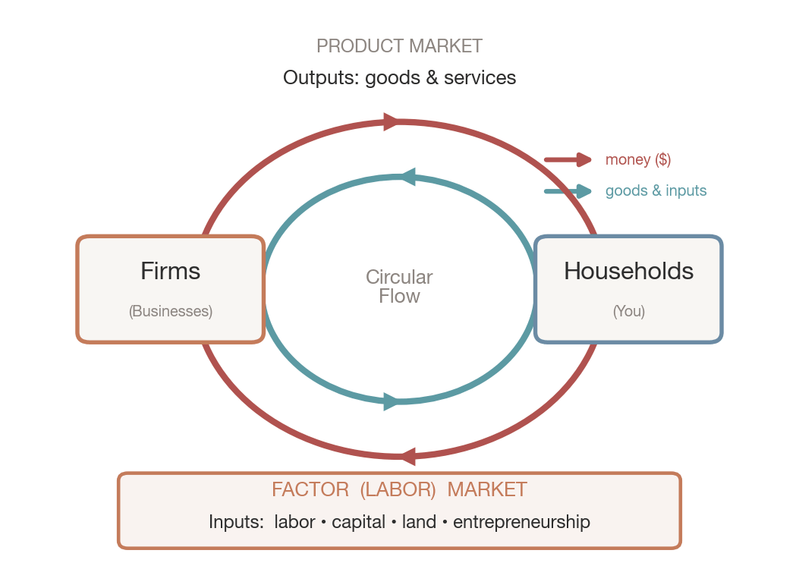
Product market (top): firms sell, households buy goods & services.
Factor (labor) market (bottom): the roles flip — households supply labor, firms buy it.
This whole chapter zooms into the bottom loop. The wage is its price.
DAILY LIFE
MONEY
We meet companies as sellers — we buy their coffee, cars, subscriptions.
LABOR MARKET
MONEY
Companies are buyers — they purchase our time, effort, and cognition.
Takeaway: employers don’t hire out of charity — they act as rational, calculated purchasers in a marketplace.
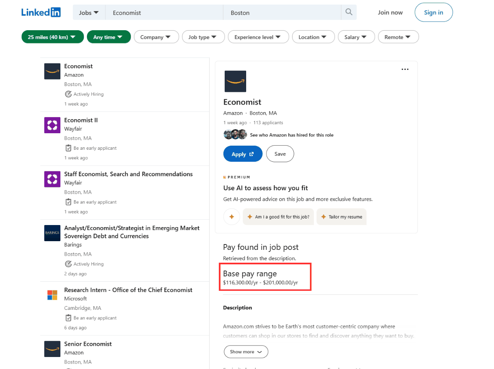
Each posting is a firm demanding labor; each applicant is a worker supplying it.
The price is the wage — here a base pay range of $116,300–$201,000.
113 applicants for one role — that’s the supply side you can see in real time.
$95,000
Junior Developer
Applicants
3,000
$48,000
Teacher (Rural Texas)
Applicants
4
Both require a degree. Both contribute to society. Why the gap?
Section 1
How workers decide how much labor to offer — the work–leisure trade-off
Everyone gets the same 24 hours. After sleep, the day is a constant tug-of-war between work (income) and leisure (everything else).
Deciding how many hours to sell as labor is exactly what the labor supply curve describes.
Interactive simulation in the style of Nathan Yau’s “A Day in the Life of Americans” (FlowingData, 2015) — each dot is one of ~500 people; hourly activity shares patterned on the BLS American Time Use Survey (2014).
Time is a finite resource. Each hour you must “trade” between two uses:
Work — time sold as labor, which generates income (money).
Leisure — resting, hobbies, watching YouTube — which generates utility.
The opportunity cost of one hour of leisure is the wage you gave up by not working it.
Higher wage → leisure is more “expensive” → people supply more hours → an upward-sloping labor supply curve.
“Baby Shark Dance” by Pinkfong — the single most-viewed video on YouTube.
16.3B
views
2:17
minutes long
615.6M
human-hours spent watching it
That is a massive collective economic choice — humanity spent that time on leisure instead of the wages or output it could have produced.
The collective time spent watching “Baby Shark” is enough to…
Build the Empire State Building — 88 times
615.6M watch-hours vs. ~7M construction-hours
Type the entire English Wikipedia — 49 times
615.6M watch-hours vs. ~12.5M typing-hours
Timmy works the assembly line at Ford — he specializes in building engines, all day long.
Ford pays him a wage for each hour — but every hour at the plant is one not spent on leisure.
At a given wage, how many hours will Timmy choose to work? That choice is his labor supply.
The trade-off: each person splits time between working for income and enjoying leisure (nonwork). Economists assume people generally prefer leisure to work.
Leisure = everything not paid work — childcare, chores, volunteering, and genuinely leisurely pursuits.
So the decision of how much to work at a given wage is a trade-off.
Higher wage: Ford’s famous 1914 raise — $2.34/day → $5/day.
Work becomes more attractive — each hour now yields more money, so the opportunity cost of leisure rises.
Substitution effect: when wages rise, the opportunity cost of leisure increases, making leisure relatively more expensive — so people substitute toward work.
Substitution effect
Wage ↑
→ opportunity cost of leisure ↑
Labor hours worked ↑
→ hours of work ↑
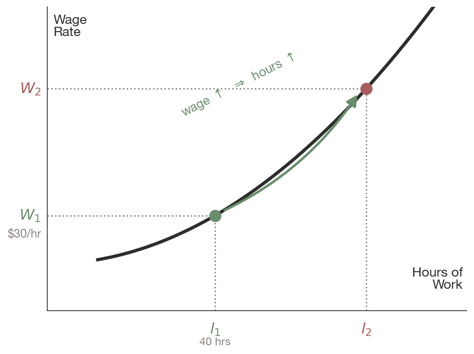
Higher wage: Ford’s 1914 raise again — $2.34/day → $5/day.
A higher wage lets Timmy afford more of everything — and leisure is one of those things.
Income effect: when wages rise, Timmy earns more for the same hours — so he can “buy back” leisure and work fewer hours.
Income effect
Wage ↑
→ income ↑ → demand for leisure ↑
Labor hours worked ↓
→ hours of work ↓
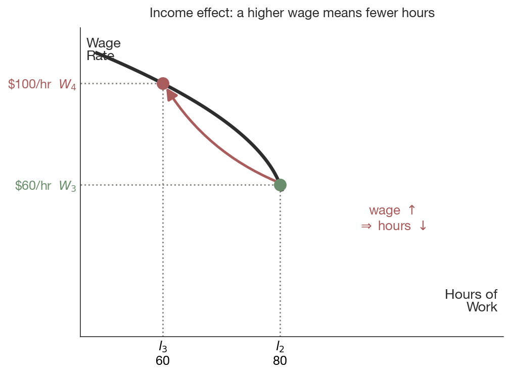
It shows the hours a person will work at each wage rate — and the two effects pull against each other.
Low wages → substitution wins: wage ↑, hours ↑ (curve slopes up).
High wages → income wins: wage ↑, hours ↓ (curve bends back).
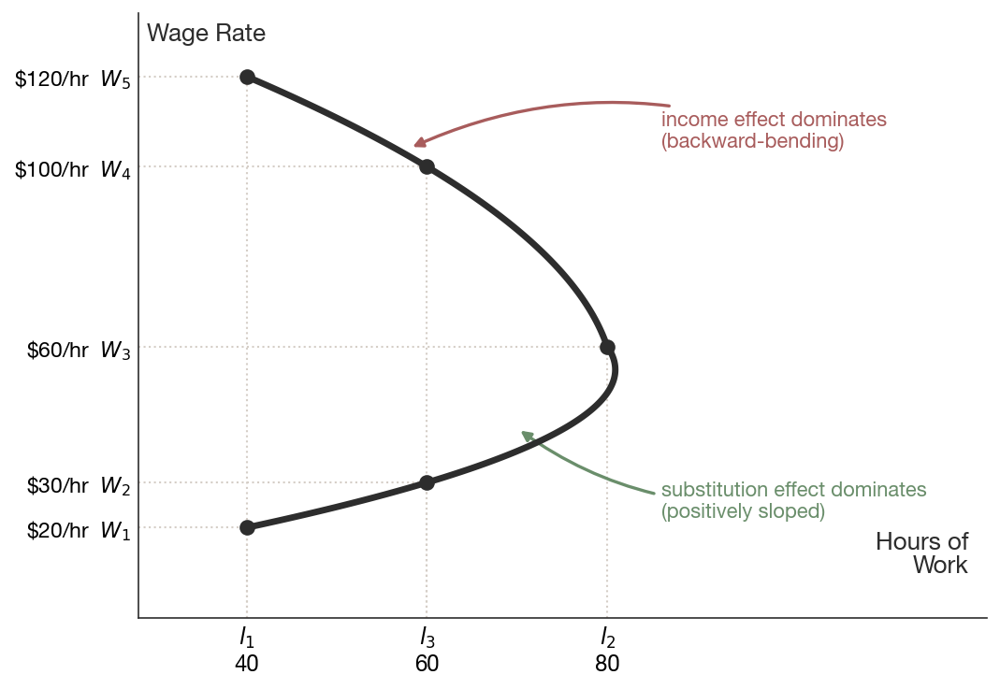
The total labor supplied to an occupation or industry at each wage.
Upward-sloping — even though individual curves bend back. Higher wages attract more applicants from other jobs.
Reservation wage (WR): the lowest wage at which someone will take the job — here $15/hr. Below it, no one supplies labor.
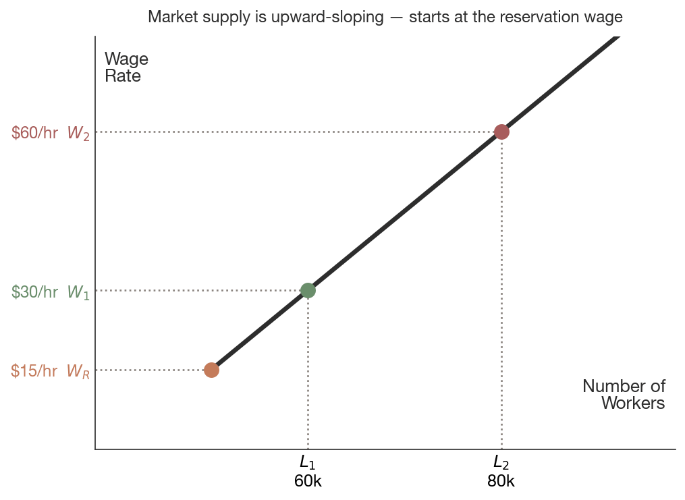
Factors other than the wage shift the whole curve:
Demographics & population
Nonwage job aspects
Wages in other jobs
Nonwage income
More workers available (immigration, higher participation) → supply shifts right (S1 → S2).
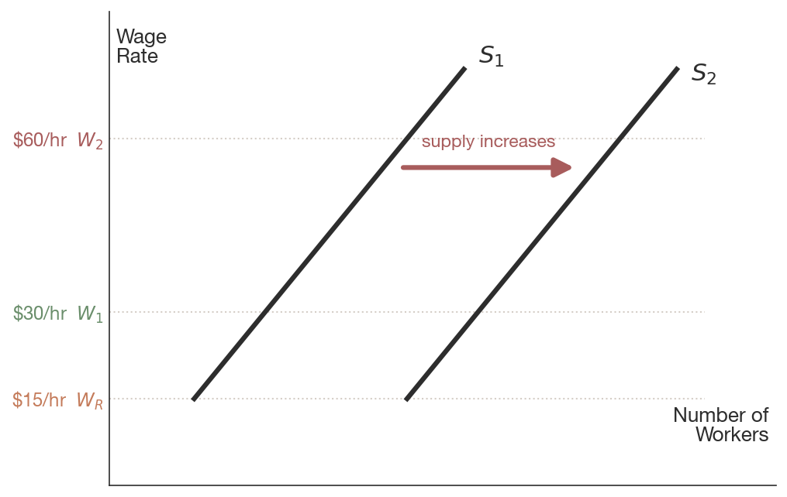
Section 2
From product markets to labor markets — firms as buyers
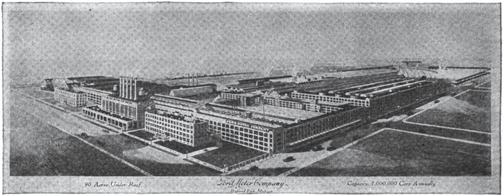
As the Model T’s real price fell ($850 in 1908 → ~$260 by the 1920s), demand exploded. To build a million cars a year at low cost, Ford needed a giant plant and an army of workers.
Highland Park: 90 acres under roof, capacity 1,000,000 cars/yr — up to 25,000 workers (~1912); 14,000 in 1914, most foreign-born.
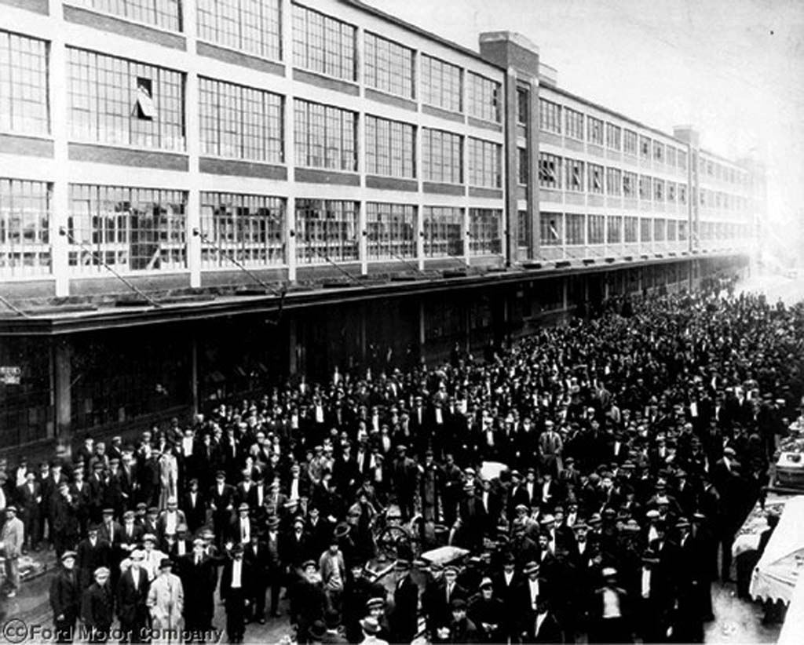
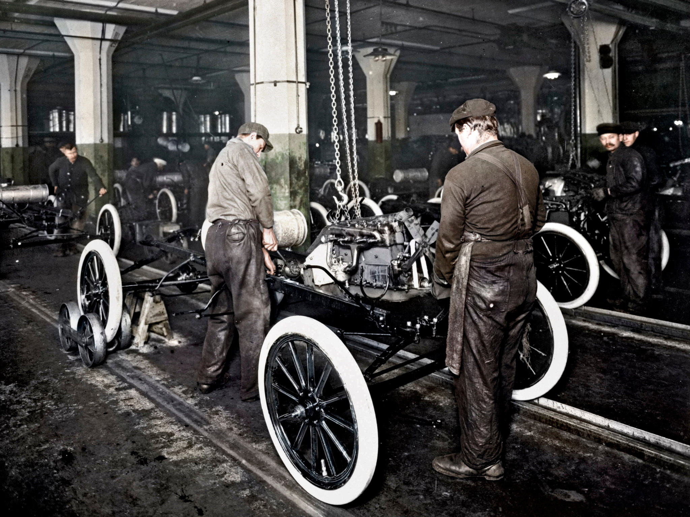
Each worker Ford adds produces more cars — that’s the productivity side.
But Ford doesn’t hire Timmy out of charity — it hires him because customers want cars.
So labor demand is a derived demand — derived from the demand for the product.
Derived demand: a firm’s demand for labor comes from two things —
the demand for its product and the productivity of labor.
No demand for the product → no demand for the labor that makes it.
Put them together and you get a worker’s value to the firm: productivity × product price. That’s the next two steps.
Q1: What extra output does each worker add?
MPPL = the extra output from one more unit of labor.
\( MPP_L = \dfrac{\Delta \text{Output}}{\Delta \text{Labor}} \)
| Labor | Total Output | Marginal Product | MPPL |
|---|---|---|---|
| 0 | 0 | 0 | 0 |
| 10 | 3 | 3 | 3 ÷ 10 = 0.3 |
| 20 | 8 | 5 | 5 ÷ 10 = 0.5 |
| 30 | 10 | 2 | 2 ÷ 10 = 0.2 |
| 40 | 11 | 1 | 1 ÷ 10 = 0.1 |
Diminishing returns: after 20 workers, each extra worker adds less output — MPPL falls.
Q2: What extra revenue does each worker add?
\( MRP_L = MPP_L \times MR \)
Hire rule: keep hiring while MRPL ≥ wage ($5).
| Labor | Output | Total Revenue (×$25) | MPPL | MRPL (×$25) | Hire? |
|---|---|---|---|---|---|
| 10 | 3 | $75 | 0.3 | $7.50 | ✓ |
| 20 | 8 | $200 | 0.5 | $12.50 | ✓ |
| 30 | 10 | $250 | 0.2 | $5.00 | ✓ |
| 40 | 11 | $275 | 0.1 | $2.50 | ✗ |
Hire up to 30 workers, where MRPL = $5 = the wage. The 40th batch adds only $2.50 — not worth $5.
Priya charges $40/session and pays each tutor $200/day.
Fill in MP (change in sessions) and MRP (MP × $40) yourself:
| Tutors | Sessions/day | MP | MRP (MP×$40) |
|---|---|---|---|
| 1 | 8 | ? | ? |
| 2 | 14 | ? | ? |
| 3 | 18 | ? | ? |
Should Priya hire the 3rd tutor at $200/day?
Compute the 3rd tutor’s MRP, then vote — press ↓ for the answer.
| Tutors | Sessions | MP | MRP (×$40) | Wage | Hire? |
|---|---|---|---|---|---|
| 1 | 8 | 8 | $320 | $200 | ✓ Yes |
| 2 | 14 | 6 | $240 | $200 | ✓ Yes |
| 3 | 18 | 4 | $160 | $200 | ✗ No |
| 4 | 20 | 2 | $80 | $200 | ✗ No |
Your votes
3rd tutor’s MRP ($160) < the $200 wage — hiring loses $40/day. Priya hires 2 tutors. Rule: hire while MRP ≥ wage.
The downward slope reflects diminishing marginal returns: each additional worker adds less revenue — so the firm hires more only at a lower wage.
If the daily wage falls to $150, how many tutors should Priya hire?
| Tutor | MRP |
|---|---|
| 1 | $320 |
| 2 | $240 |
| 3 | $160 |
| 4 | $80 |
Rule: hire while MRP ≥ wage.
A
1 tutor
B
2 tutors
C
3 tutors
D
4 tutors
Vote — press ↓ for the answer.
| Tutor | MRP | Wage | Hire? |
|---|---|---|---|
| 1 | $320 | $150 | ✓ Yes |
| 2 | $240 | $150 | ✓ Yes |
| 3 | $160 | $150 | ✓ Yes |
| 4 | $80 | $150 | ✗ No |
Your votes
A lower wage ($200 → $150) makes the 3rd tutor worth hiring — Priya now hires 3 tutors. Lower wage → more workers, which is exactly why labor demand slopes down.
$11.9M
Average NBA salary
15 players
per roster
$3.2M
Average NFL salary
53 players
per roster
The NFL generates more total revenue. But each NBA player captures a larger share of team revenue — higher individual MRP.
| Company | Business Model | Total Revenue | Employees | Revenue / Employee |
|---|---|---|---|---|
| Krafton (PUBG) | Focused (1 main IP) | $1.34B (2023) | ~2,343 | ~$571,900 |
| Ubisoft | Diversified (many IPs) | $2.69B (2024) | ~19,011 | ~$141,500 |
Revenue per worker is a rough proxy for a worker’s value (MRP). Krafton’s focused team produces ~4× the revenue per employee — higher productivity means higher labor demand.
In a competitive product market the firm is a price-taker, so MR = P.
Then MRPL is the Value of the Marginal Product: VMPL = MPPL × P.
Hire one more worker while VMPL ≥ wage.
Diminishing returns: early workers may add more, but eventually each adds less — VMPL falls.
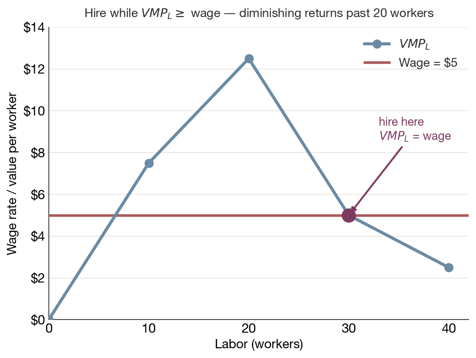
The downward-sloping part of VMPL is the firm’s labor demand curve. Hire to MRPL = W.
If the wage falls, firms demand more labor — the MRP of extra workers now exceeds the lower wage.
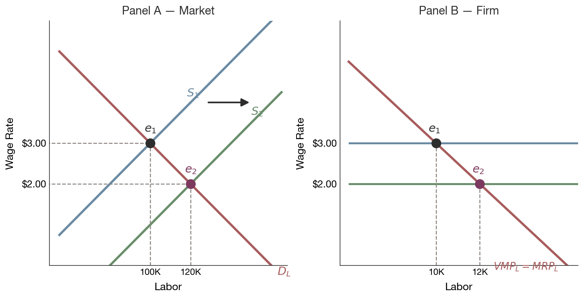
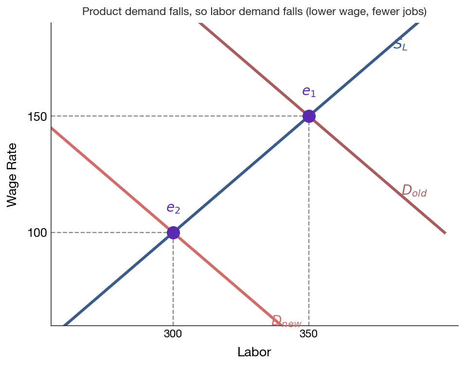
Labor demand is derived — so a change in demand for the product shifts the demand for labor.
CD players? Streaming killed the product — so demand for the workers who make them collapsed.
DL shifts left (Dold → Dnew): the wage falls ($150 → $100) and employment falls.
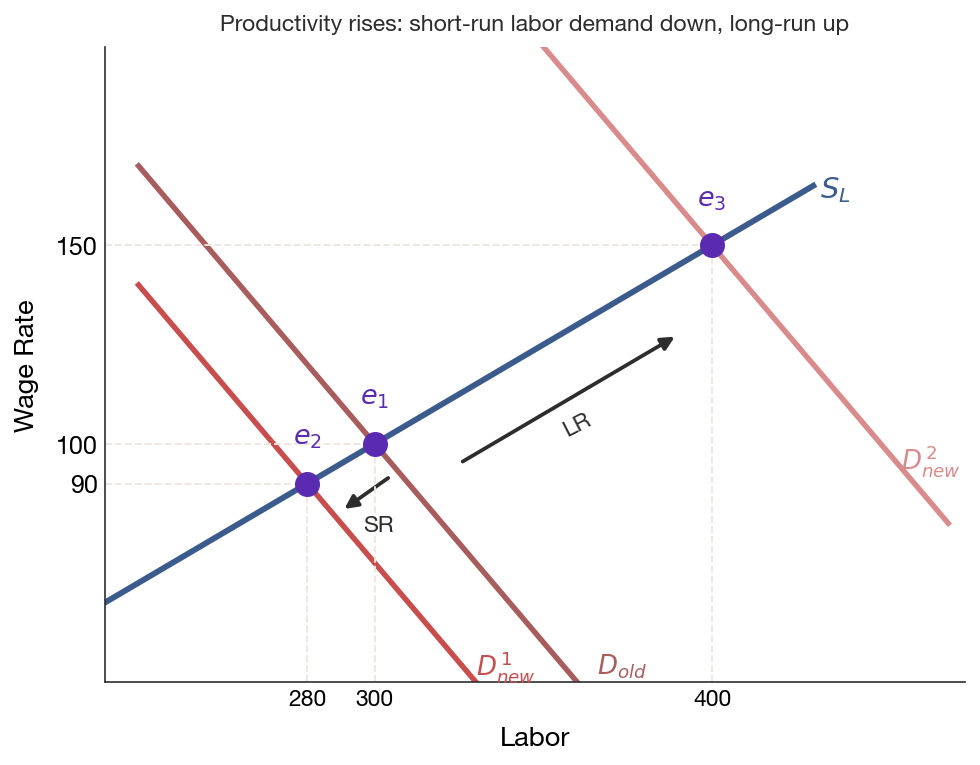
One John Deere harvester can replace ~10 lumberjacks.
Short run: machines do the work → labor demand ↓ (e1 → e2).
Long run: cheaper lumber → more output & new jobs → labor demand ↑ (e1 → e3).
Where did the 10 go? Not gone — they move to running & servicing the harvesters, sawmills, log trucking, and the homebuilding boom cheaper lumber sets off.
~16,000 board feet of lumber frames one average home. Cheaper lumber → more houses built → more carpenters, framers & electricians than the forest ever lost.
Spreadsheets like Excel were once feared as the ultimate office “job killer.”
Short run: software does the routine number-crunching → demand for bookkeeping & data-entry labor ↓ (e1 → e2).
Long run: cheap, powerful computing → whole new industries → labor demand ↑ (e1 → e3). “Excel skills” went from exotic → expected on almost every job posting.
And it created high-pay jobs that couldn’t exist before computers: software developers (~1.9M in the US, median ~$130k, BLS), data analysts, financial modelers.
“A country’s standard of living depends on its ability to produce goods and services.”
In the long run the wage tracks productivity: W = VMPL.
Source: U.S. Bureau of Labor Statistics.
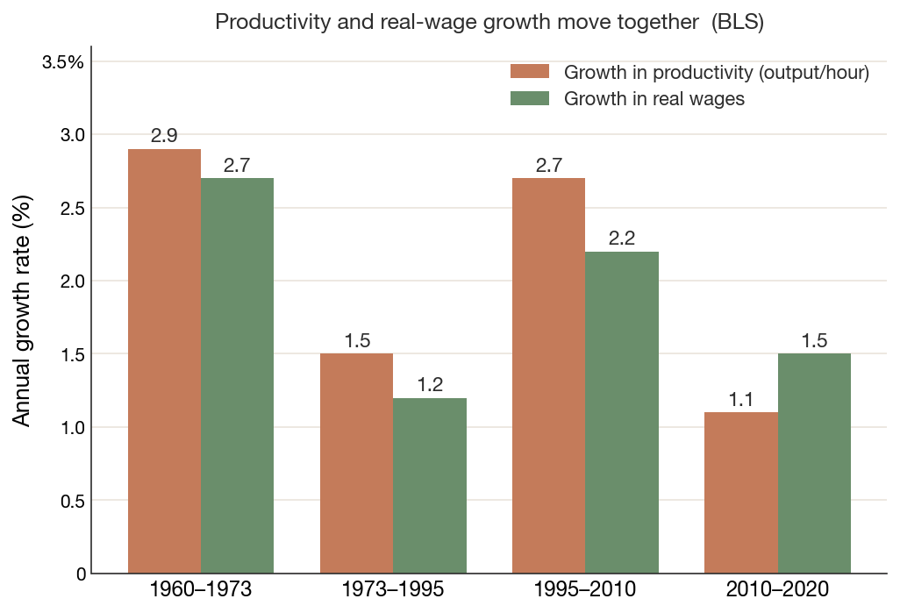
Each generation of technological innovation lets the same worker build more — e.g. constructing a house:
Rising productivity keeps compounding — every decade a new wave of technology lets us do more with the same hours:
1960s–70s: TV, transistor radios, and the first personal computers.
1980s–90s: PCs everywhere, mobile phones, and the World Wide Web.
2000s–10s: smartphones, cloud, social media, and streaming.
2020s: AI, wearables, and quantum — the next wave. Each one raises output per hour → real wages.
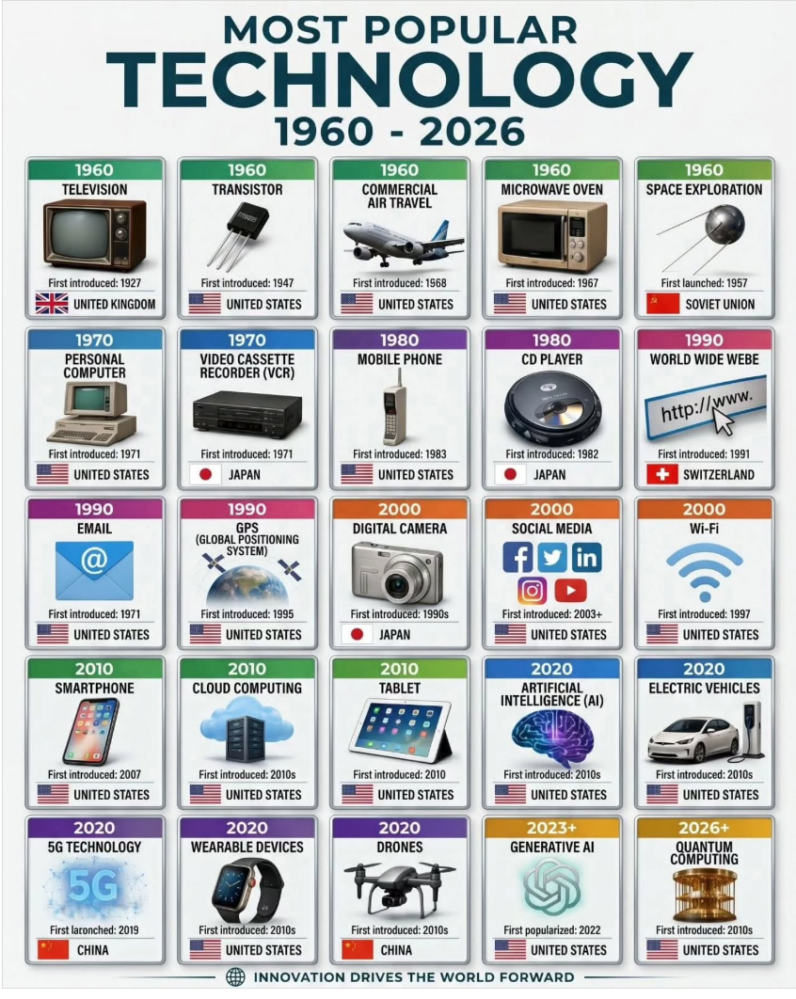
A breakthrough changes labor demand depending on whether capital (AI, robots) is a substitute for or a complement to the worker — and on the time horizon and the nature of the work.
Short run — substitute. For repetitive tasks an AI or humanoid can already do, capital replaces labor → labor demand ↓.
Long run — complement. New products, new markets, and deeper, more complex work emerge → labor demand ↑, with new kinds of jobs.
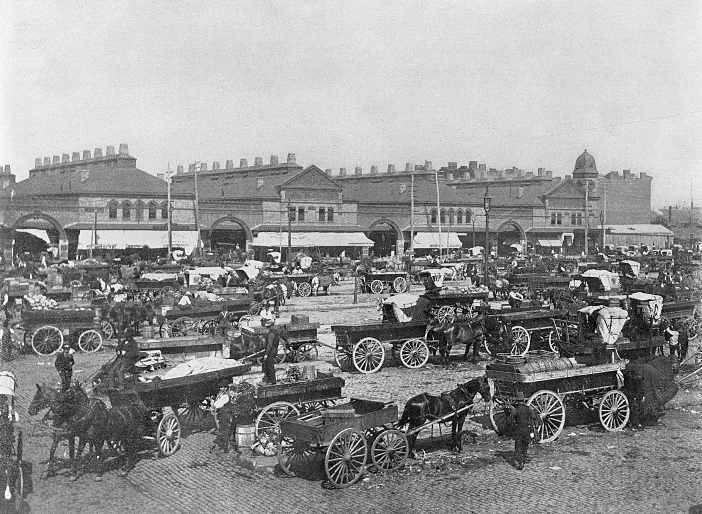
1. Substitute. The car replaced the horse coach — coach drivers feared losing their jobs.
2. Demand explodes. Cheaper transport → new industries to build, sell, maintain, fuel, race cars.
3. Spillovers. Cars reshaped agriculture, food & restaurants — millions of new jobs.
4. Complements. How many cars now? Labor & capital became complements.
Jevons paradox: efficiency often means we use more, not less. Replace “car” with “AI” — same picture.
The same work can be produced with very different mixes of labor and AI/capital. Firms pick the recipe that’s cheapest given the wage vs. the cost of AI.
The long-run story is optimistic — but the road from a breakthrough to broadly shared gains is long and bumpy. Real problems have to be solved along the way:
Displacement & timing. Workers in automated tasks lose jobs now — the transition to new ones can take years, or a whole career.
Re-skilling. New jobs need new skills — training and education have to keep up with the technology.
Inequality & power. Who captures the productivity surplus — and who owns and controls the AI and the capital?
Trust & safety. Bias, errors, and the accountability of the new technology.
Are we ready for humanoids at home yet? What’s the trade-off?
Substitute or complement? Watch the work, then ask: which tasks shift to capital — and what new work opens up?
Source: Anthropic Economic Index — Labor Market Impacts (2025–26), tracking real Claude usage against U.S. occupations.
The evidence so far
AI is used to augment more than to fully automate — people + AI, not just replacement.
Most exposed: programmers (~75%), customer-service reps, data-entry (~67%).
No systematic rise in unemployment for exposed workers since late 2022.
But entry-level hiring (ages 22–25) slowed ~14% in exposed jobs.
Shifts in labor demand
Short run: AI substitutes routine tasks → demand for those tasks shifts left (felt most at the entry level). Elsewhere, augmentation keeps demand — net effect small so far.
Long run: in highly-exposed fields, projected job growth softens (every +10pp AI coverage → about −0.6pp growth). But cheaper output + new AI-complementary roles open new demand — and it might create entirely new job categories that don’t exist yet.
e.g. prompt / AI engineers · MLOps & model-ops · AI auditors & safety reviewers · data curators — just as cars created mechanics and the web created UX designers.
Supply responds too: workers re-skill toward AI-complementary work — the wage tracks where labor is still scarce and valuable.
Section 3
Compensating differentials, human capital, and efficiency wages
Some jobs are dangerous, unpleasant, or inconvenient — workers demand higher pay to compensate. Desirable perks get “priced in” as lower pay.
Alaskan Crab Fisher
$50,000+ / few months
One of the deadliest jobs
High-Rise Window Washer
Hazard premium
Cleaning glass 50 floors up
Night-Shift Nurse
+10–15% premium
Inconvenient hours
Remote Worker
–10–15% pay cut
Desirable perk priced in
Press ↓ — would you wash windows 50 floors up?
Nearly the same skill as cleaning a ground-floor window — but far more dangerous.
The market pays a compensating differential: extra wage to accept the risk most workers won’t.
The wage gap here isn’t about skill — it’s about the job’s conditions.
Human capital — the education, training, skills, and experience embodied in a worker. Investing in it means activities that raise workers’ skills and productivity (schooling, on-the-job training).
Benefit
Higher productivity → potentially higher wages (it raises your MRP).
The trade-off
Present costs (tuition, time, forgone pay) for future benefits (higher lifetime earnings).
Who invests — and what do they give up?
Workers
accept lower wages during apprenticeships
Students
pay tuition & forgo job opportunities
Firms
fund training & tuition reimbursement
Which would enhance your future earnings more?
A
Spend 4 years studying at the world’s best university — but you get no degree to show for it.
“The classes actually teach real skills that make me more productive.”
B
Get the official degree from the world’s best university — but you cannot actually study there.
“The diploma is simply a signal to employers.”
Vote — press ↓ for what economists call this.
Your votes
A = Human capital. School builds real skills → higher productivity → higher pay.
B = Signaling. The degree certifies ability & effort to employers — even if the classes taught little.
The honest answer is both — education builds some skills and signals ability. Decades of research still can’t fully separate them.
Human-capital investments lead to more job opportunities and greater earnings.
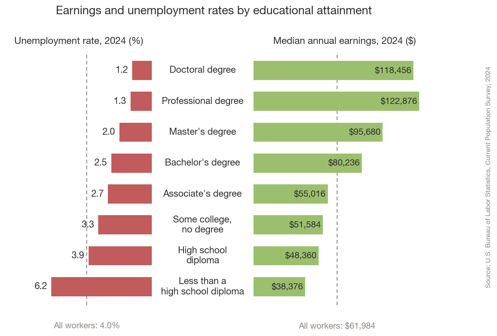
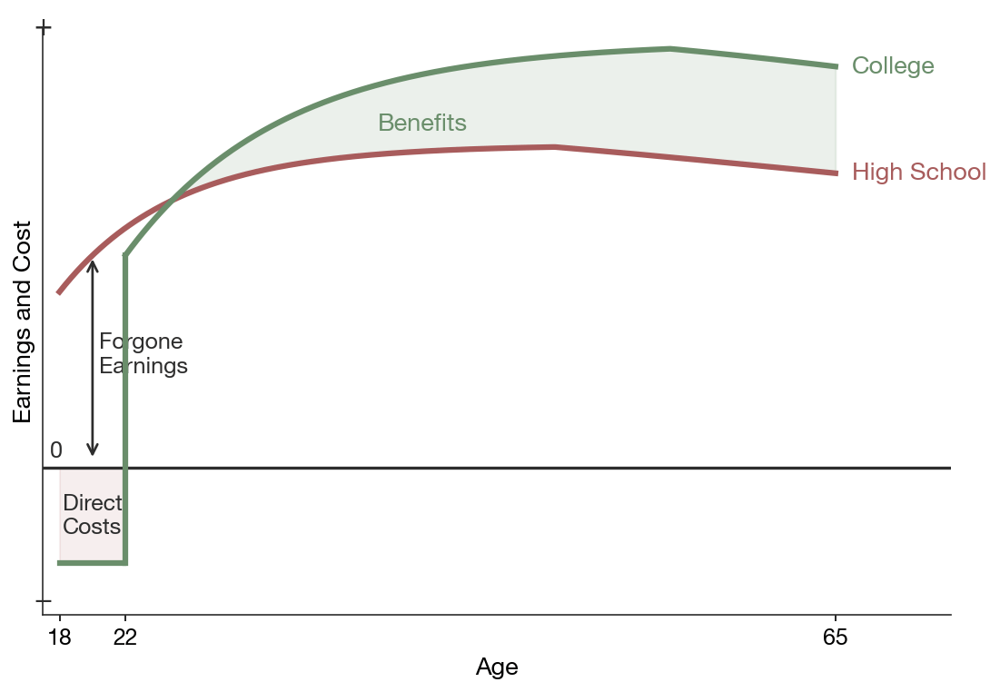
Direct costs: tuition, fees, books (the area below zero).
Forgone earnings: the wages you give up by not working — often the biggest cost.
Benefits: higher earnings every year for decades (the gap above the high-school path).
A classic present cost → future benefit investment — worth it when lifetime benefits exceed the costs.
Education is an investment, so the choice turns on its opportunity cost. Three things shift that cost — and the decision:
1. Time horizon (age). Younger workers have more years to earn the return — so they’re more likely to invest.
2. The earnings gap. The bigger the college–high-school wage premium, the bigger the payoff → more people attend.
3. Discount rate. The more you value the present over the future, the less a delayed-payoff investment is worth → less schooling.

The rival view: a degree mainly signals to employers that a worker is intelligent, disciplined, and trainable — even if class added little to actual productivity.
A degree is a costly hurdle — and it’s harder and costlier for low-ability workers to clear.
High-ability workers find it worth the cost → they earn the degree to signal their type.
Low-ability workers can’t profitably clear it → the diploma separates the two types (Spence signaling).
Reality is both: education builds some human capital and signals ability — economists debate the mix.
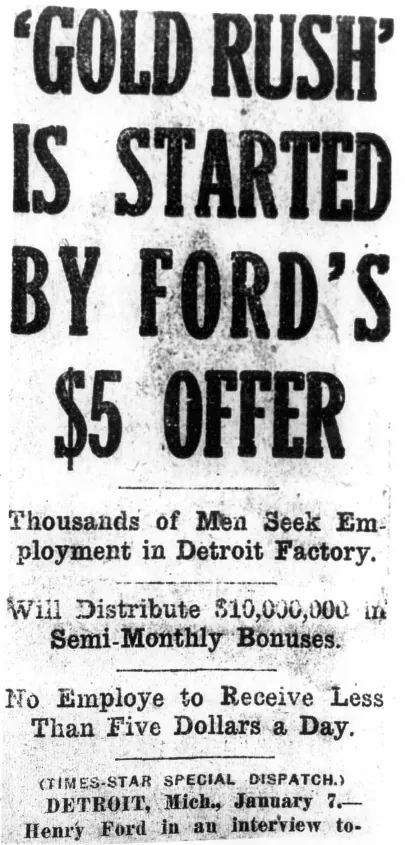
The 1914 operational crisis — monotony & exhaustion were bleeding profits:
300%
annual turnover — the whole workforce replaced 3× a year.
52,000
people hired in one year…
14,000
…just to keep 14,000 steady jobs filled.
Ford doubled pay to \$5/day (≈\$160/day in today’s dollars; vs the \$2.34 market wage). Turnover plunged, productivity soared, and unit costs fell.
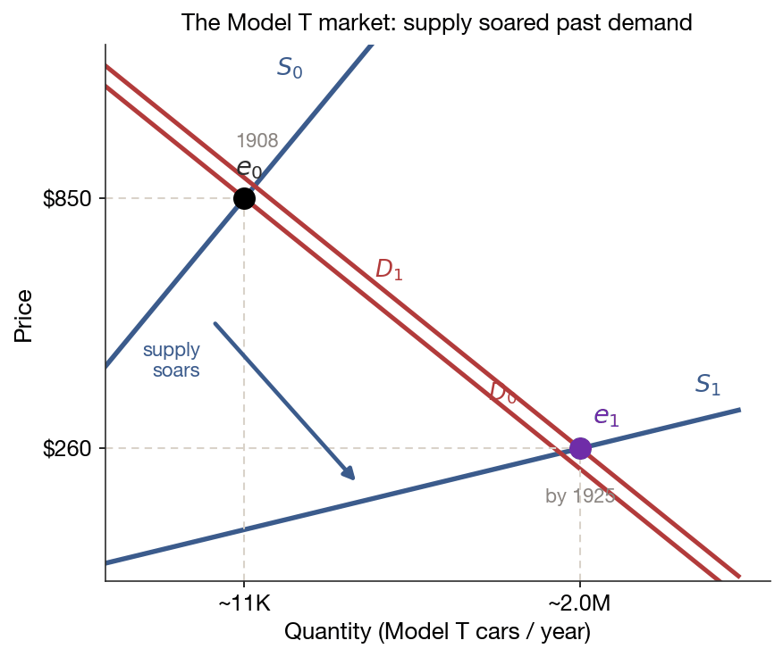
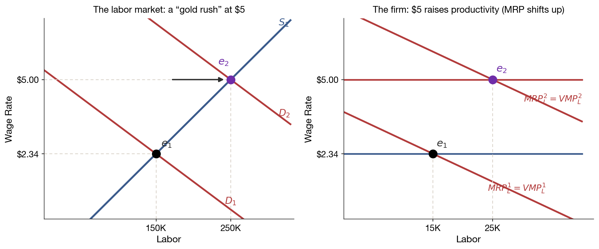
Efficiency wages = paying above market to cut turnover, attract better workers, and lift effort. A higher wage that raises productivity (MRP shifts up) can pay for itself. Ford’s \$5/day ≈ \$160/day today.
Same logic, 100+ years later — Costco vs. traditional retail:
Costco’s premium pay → ~6% turnover; typical retail → ~44%. Lower hiring/training cost, faster service, deeper know-how.
States (CO, CA, NY…) now force salary ranges onto job listings — fixing an information asymmetry. Trace the effects on both sides.
The win — better information
+1.3% to +3.6% overall pay across the board.
−20% to −40% of the gender wage gap closes.
No free lunch — compressed ranges
Before: posted band \$60k–\$110k (room for a secret superstar premium).
After: band compresses to \$75k–\$85k — protects the baseline worker but caps the upside.
The economist’s lesson: there are no perfect solutions — fixing one friction (hidden pay) creates another (less room for individualized, creative compensation). Always ask: who wins, who loses, and what’s the trade-off?
Section 4
When equally productive workers face unequal treatment
Women 84¢ · Black men 79¢ · Hispanic men 73¢
…per \$1 earned by white men. Transparency laws shrank it ~40%, but it persists for the same human capital.
Taste-based: the employer prefers one group (Becker, 1957).
Statistical: the employer uses group averages as a proxy for an individual’s quality.
Press ↓ — but does 84¢ mean women are paid less for the same job?
“The 84¢ figure means women are paid less for the exact same job.”
84¢ compares all full-time women to all full-time men. Controlling for occupation, hours & experience, the gap narrows to 5–8¢.
Claudia Goldin (2023 Nobel): much of it is “greedy work” — long, inflexible hours pay disproportionately more, and women still bear more caregiving.
The real question isn’t just “equal pay for equal work” but “why are the most lucrative jobs designed to exclude many women?”
Taste-based discrimination (Becker, 1957): some employers simply prefer one group, so equally-skilled workers get split into two markets.
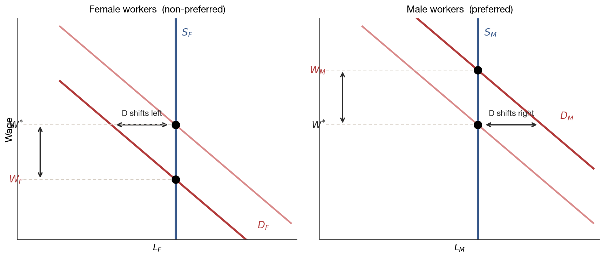
Non-preferred group: employers demand them less → their wage falls to WF.
Preferred group: employers demand them more → their wage rises to WM.
Same skills, same productivity — yet a wage gap (WM − WF) opens up, and groups get segregated into different occupations.
Discrimination is costly for the discriminator — so competition should erode it.
Discriminating firm: insists on “preferred” workers → pays a higher wage bill → higher costs, lower profit.
Non-discriminating firm: hires the cheaper, equally-skilled group → lower costs, higher profit.
Becker’s conclusion: in the long run, market competition should drive discrimination toward zero — non-discriminators out-compete discriminators.
But it persists — limits to the theory:
high adjustment costs of hiring/firing · customer or coworker prejudice · statistical discrimination (group averages as a proxy) · segregated networks & occupations.
Bertrand & Mullainathan’s résumé audit isolated the exact moment discrimination happens — the callback.
Emily / Greg
Lakisha / Jamal
Identical formatting, education & experience. Only the name differs — white-sounding names got 50% more callbacks.
The study (US): ~5,000 fake résumés to 1,300 Boston & Chicago ads. Discrimination showed up for all types of employers.
Canada (Oreopoulos): English-sounding names got 39% more callbacks — across English, Indian, Pakistani, Chinese & Greek names.
The free market fails to price identical talent the same — direct evidence discrimination is real.
Bertrand & Mullainathan, American Economic Review (2004); Oreopoulos (2011). Also discussed in Freakonomics.
The free market assumes competition. But when the employer holds all the cards — no competitor across the street — supply and demand break down.
Definition: Monopsony
The exact inverse of a monopoly — a market with a single buyer for your labor, giving the employer the power to depress wages below a worker’s MRP.
The Monopsony Spectrum
Absolute / Historical (Early 1900s)
Appalachian company towns — the employer owned the jobs, the housing, and the grocery stores. Total entrapment.
Geographic / Modern
Hospital systems dominating a 50-mile radius — geographically trapping specialized nurses who can’t uproot their families.
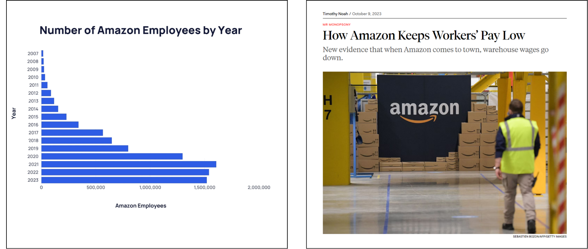
From ~17K workers (2007) to ~1.5 million (2023), Amazon is the dominant buyer in many local labor markets. Warehouse pay in high-earning Amazon counties runs ~18% lower (≈\$822/month) than in comparable non-Amazon counties — a gap that didn’t exist before Amazon arrived. (NELP, 2023)
Non-compete clauses have exploded — criminalizing the ability to seek better wages, trapping warehouse packers, security guards, and fast-food workers.
18%
of all American workers are bound by a non-compete.
\$300B
in suppressed annual wages that would be unlocked if banned (FTC) — leverage taken from workers.
Final U.S. income inequality is not the result of a pure free market — it’s a market heavily distorted by compounding structural frictions.
Market Frictions Synthesis
Where monopsony pushes wages below MRP, a union pushes the other way — restricting labor supply to raise the wage. But it has a spillover.
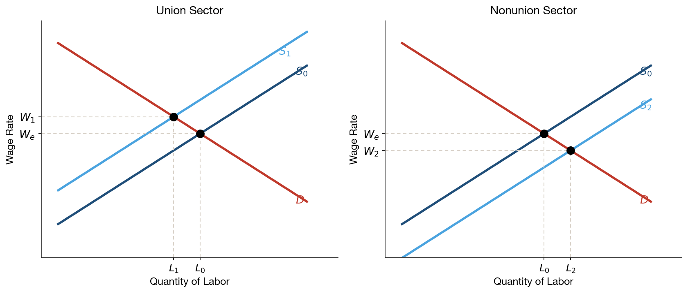
Union sector: supply ↓ → wage rises (We→W1) — but fewer jobs (L0→L1).
Nonunion sector: displaced workers crowd in → supply ↑ → wage falls (We→W2).
Section 5
Lorenz curves, Gini coefficients, and what's driving the trend
Frans de Waal’s famous experiment: two capuchin monkeys are paid unequally for the same task. Watch the reaction.
“Two Monkeys Were Paid Unequally” — TED (Frans de Waal). The cucumber-vs-grape reaction hints at why income inequality stirs such strong feelings.
Even in a fair market, people earn different incomes for perfectly legitimate reasons — starting with age.
1. Age & the income life-cycle
Early Career (25–35) — modest income at the start.
Career Development (35–50) — salaries rise with experience.
Peak Accumulation (50s–early 60s) — peak earning & saving.
Retirement (mid-60s+) — income falls, but so do responsibilities.
Education & skills — more human capital.
Ability & effort — talent and hours worked.
Risk & entrepreneurship — a bet that pays off (or not).
Occupation & compensating differentials.
Inheritance — a head start in wealth, passed down.
Luck — timing, a viral hit, the right place.
Two views: some of the gap is fair — market rewards & life choices; some is systemic favoritism, discrimination & monopsony. Next: how we measure the total.
How total income is split among the factors of production — \$ billions (share of these five in parentheses).
| Year | Wages | Proprietor | Rent | Corp. Profit | Net Interest |
|---|---|---|---|---|---|
| 1929 | 51.1 (60.3) | 14.9 (17.6) | 4.9 (5.8) | 9.2 (10.8) | 4.7 (5.5) |
| 1950 | 154.8 (65.5) | 38.4 (16.3) | 7.1 (3.0) | 33.7 (14.3) | 2.3 (1.0) |
| 1970 | 617.2 (73.7) | 79.8 (9.5) | 20.3 (2.4) | 81.6 (9.7) | 38.4 (4.6) |
| 1990 | 3,351.7 (72.2) | 381.0 (8.2) | 49.1 (1.1) | 408.6 (8.8) | 452.4 (9.7) |
| 2010 | 8,093.9 (69.3) | 1,059.3 (9.1) | 425.0 (3.6) | 1,435.1 (12.3) | 661.9 (5.7) |
| 2020 | 11,964.2 (68.4) | 1,730.0 (9.9) | 710.0 (4.0) | 2,427.5 (13.9) | 666.1 (3.8) |
| 2023 | 13,985.5 (66.3) | 1,909.5 (9.0) | 845.0 (4.0) | 3,560.0 (16.9) | 800.0 (3.8) |
Observations
Labor’s share (wages) rose until the 1970s, then drifted down.
Proprietor’s & rent shares are small and fairly steady.
Corporate profit’s share has surged — ~14% (2020) to ~17% (2023).
Net interest swings with interest rates.
Shifts in shares reflect changes in the economy, technology & policy.
Source: BEA, National Income by Type (2023 figures approximate).
How much income goes to each household quintile (%), plus the Gini coefficient.
| Year | Lowest | Second | Third | Fourth | Highest | Top 5% | Gini |
|---|---|---|---|---|---|---|---|
| 1970 | 4.1 | 10.8 | 17.4 | 24.5 | 43.3 | 16.6 | 0.394 |
| 1980 | 4.2 | 10.2 | 16.8 | 24.7 | 44.1 | 16.5 | 0.403 |
| 1990 | 3.8 | 9.6 | 15.9 | 24.0 | 46.6 | 18.5 | 0.428 |
| 2000 | 3.6 | 8.9 | 14.8 | 23.0 | 49.8 | 22.1 | 0.462 |
| 2010 | 3.3 | 8.5 | 14.6 | 23.4 | 50.3 | 21.3 | 0.470 |
| 2020 | 3.0 | 8.1 | 14.0 | 22.6 | 52.3 | 23.0 | 0.489 |
| 2023 | 3.1 | 8.3 | 14.1 | 22.6 | 51.9 | 23.0 | 0.485 |
Observations
Perfect equality = each quintile gets 20%.
The highest quintile’s share rose (43→52%) since 1970; all others fell.
Gini climbed 0.394 (1970) → ~0.485 (2023).
CEO pay rose ~10× since 1978; real worker wages barely moved.
Before taxes & transfers, which reduce measured inequality.
Source: U.S. Census Bureau, CPS ASEC (2023).
PAYCHECK
\$50K
=
PAYCHECK
\$50K
Equal distribution: each earns 50% of the \$100K total.
Sam and Ken earn the same — the “perfect-equality” benchmark (the straight Lorenz line).
SAM
\$150K
150/200 = 75% · rich
≠
KEN
\$50K
50/200 = 25% · poor
Unequal: one earns 75%, the other 25%.
Sam’s restaurant boomed; Ken’s stayed flat — the income split bows away from equality (the curved Lorenz line).
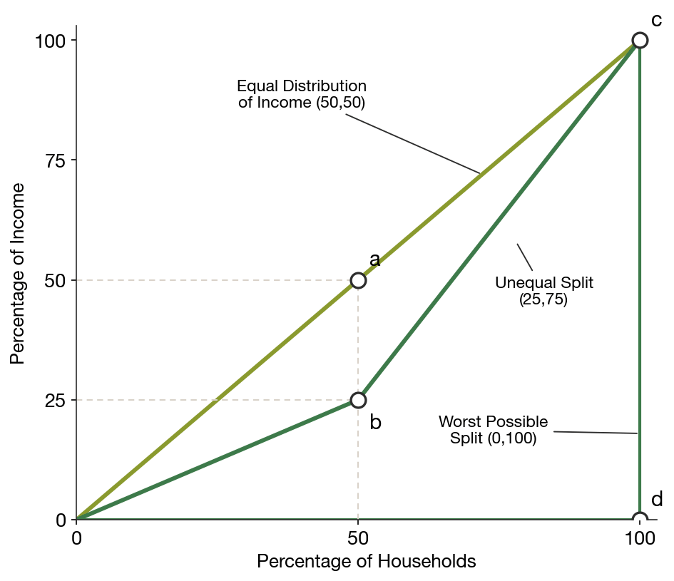
Plot cumulative % of income (y) against cumulative % of households (x).
The straight 45° line = perfect equality (point a: 50% of people earn 50% of income).
An unequal split bows the curve below the line (point b: bottom 50% earn just 25%).
The more it bows, the more unequal — the worst case hugs the bottom-right corner.
Income is unequally distributed — the top 20% earn almost 52% of all income.
Wealth is even more unequal — the top 20% hold almost 90% of all wealth.
| Quintile | Income | Cum. | Wealth | Cum. |
|---|---|---|---|---|
| Lowest | 3.0 | 3.0 | 0.1 | 0.1 |
| Second | 8.1 | 11.1 | 0.2 | 0.3 |
| Third | 14.0 | 25.1 | 3.1 | 3.4 |
| Fourth | 22.6 | 47.7 | 7.5 | 10.9 |
| Highest | 52.3 | 100.0 | 89.1 | 100.0 |
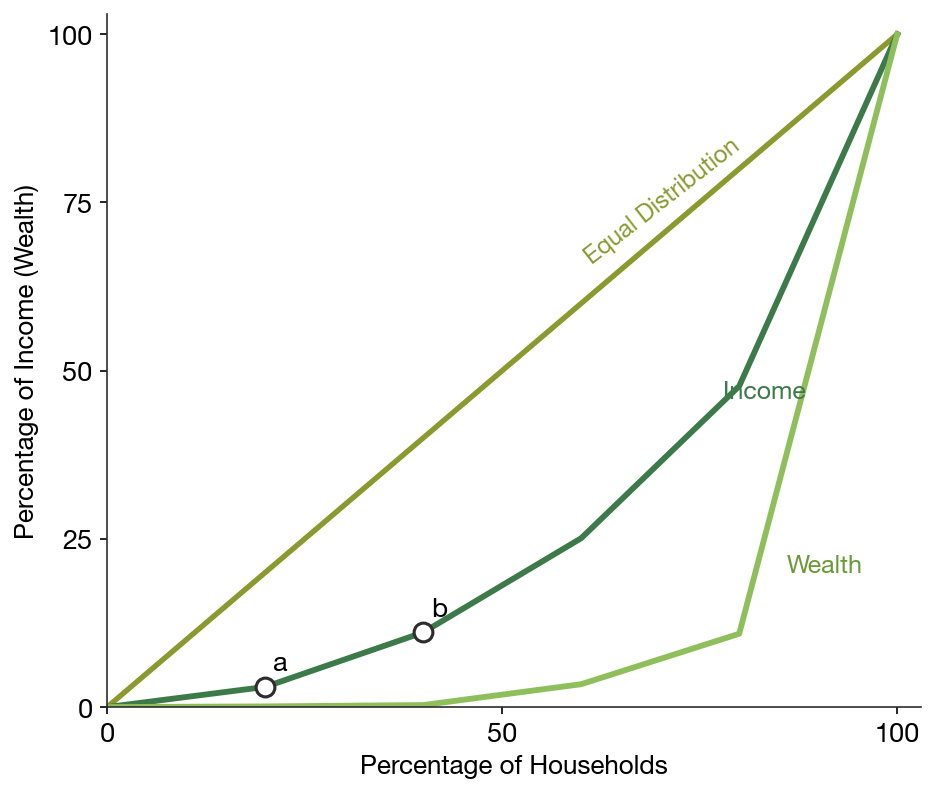
Gini = A / (A + B)
A = area between the Lorenz curve & the line of equality. B = area below the Lorenz curve.
Gini = 0 — perfect equality (A = 0; curve = the line).
Gini = 1 — maximum inequality (B = 0).
Lower = more equal, higher = more unequal. U.S.: 0.394 (1970) → ~0.485 (2023).
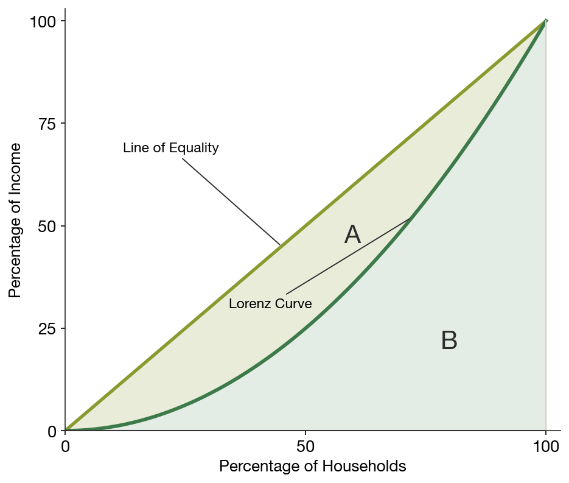
Taxes & transfers move the curve toward equality:
• Progressive income tax (higher earners pay a higher rate).
• Cash transfers (unemployment, welfare).
• Noncash benefits (Medicaid, SNAP, housing).
Gini falls from 0.489 (money income) to 0.421 (after taxes & transfers).
| Quintile | Money | Cum. | Adjusted | Cum. |
|---|---|---|---|---|
| Lowest | 3.0 | 3.0 | 7.5 | 7.5 |
| Second | 8.1 | 11.1 | 10.8 | 18.3 |
| Third | 14.0 | 25.1 | 14.3 | 32.6 |
| Fourth | 22.6 | 47.7 | 20.0 | 52.6 |
| Highest | 52.3 | 100.0 | 47.4 | 100.0 |
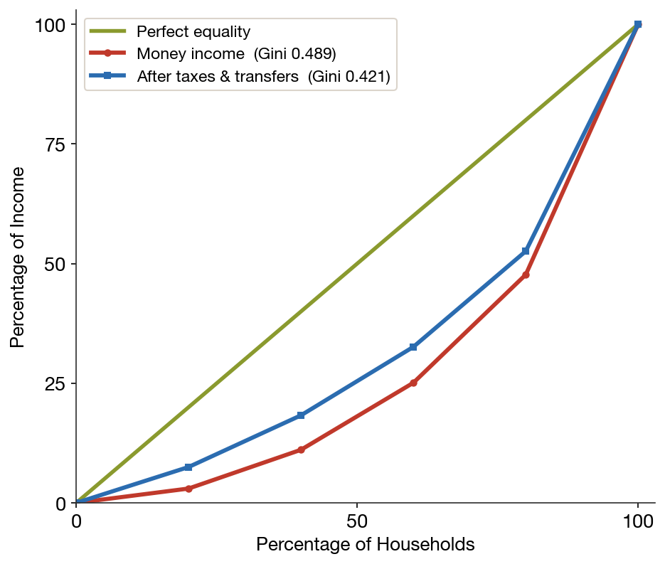
| Country | Gini |
|---|---|
| Australia | 0.344 |
| Bolivia | 0.416 |
| Brazil | 0.534 |
| Canada | 0.333 |
| Chile | 0.444 |
| China | 0.385 |
| Denmark | 0.282 |
| France | 0.324 |
| Germany | 0.319 |
| India | 0.357 |
| Country | Gini |
|---|---|
| Israel | 0.390 |
| Italy | 0.359 |
| Japan | 0.329 |
| Mexico | 0.454 |
| Nigeria | 0.351 |
| South Africa | 0.630 |
| Spain | 0.347 |
| Sweden | 0.300 |
| United Kingdom | 0.351 |
| United States | 0.489 |
European & Nordic countries are most equal (Denmark 0.28, Sweden 0.30).
The U.S. (0.489) is high for a rich nation; Brazil & South Africa are highest.
Data from World Bank, World Development Indicators (2021).
Inequality isn’t only a U.S. story — and a single photo often shows it more starkly than any Gini number.
Gini coefficients from the World Bank.
1940s–70s: "Great Compression" — inequality fell
Since 1980: Top 1% share: 8% → ~20%
CEO pay ratio: 20:1 → 280:1
Four forces: Tech, globalization, unions ↓, policy
| Rank | State | Top 1% floor | # top-1% returns | Top 5% floor |
|---|---|---|---|---|
| 1 | Connecticut | \$1,152,254 | 16,811 | \$370,060 |
| 2 | Massachusetts | \$1,113,662 | 32,598 | \$393,160 |
| 3 | California | \$1,035,673 | 177,645 | \$364,788 |
| 4 | Washington | \$989,649 | 35,456 | \$377,265 |
| 5 | New Jersey | \$975,645 | 42,437 | \$372,171 |
| 6 | New York | \$965,645 | 92,142 | \$311,560 |
| 7 | Colorado | \$865,700 | 27,447 | \$329,566 |
| 8 | Florida | \$852,206 | 101,940 | \$276,217 |
| 9 | Wyoming | \$843,121 | 2,616 | \$259,730 |
| 10 | New Hampshire | \$811,098 | 6,742 | \$320,808 |
Nationwide, it takes \$787,712 to be in the top 1% of earners.
1.49 million US tax returns met that bar in 2021.
The threshold varies hugely by state — over \$1.1M in CT & MA, ~\$760K in TX & VA.
Source: IRS / SmartAsset, 2021 tax-year data.
Mostly self-made
Only 2 in 5 of the top 1% inherited their wealth — the majority built it through careers & entrepreneurship.
Education matters
A college degree — often advanced degrees & specialized skills — is a major step toward higher earnings.
Common traits
High education
advanced degrees, specialized skills
Motivation & risk
ambition, willingness to take risks
Entrepreneurship
building value-creating businesses
The very top of the distribution we just measured
On Nov 6, 2025, Tesla shareholders approved CEO Elon Musk’s pay package — potentially worth up to ~$1 trillion, the largest in corporate history — with about 75% of votes in favor.
He only collects if Tesla hits the milestones over ~10 years: an $8.5 trillion market cap (≈6× today’s $1.4T), 20M vehicles, 1M Optimus robots, 1M robotaxis, and up to $400B in annual profit. Pay is stock — capital income, not a wage.
Musk is already the world’s richest person (~$450B+). Between this package and SpaceX’s soaring valuation — and talk of a Starlink/SpaceX IPO — analysts say he is on track to become the first trillionaire. That lands at the very top of the Lorenz curve: the top 5% already take ~23% of income, and wealth is far more concentrated than income.
Think like an economist — is a $1T award a reward for creating ~$7T of new value, or a symptom of runaway top-end concentration? A good answer names the trade-off: who gains, who loses, and what incentive it sets.
Listen — NPR, “Tesla shareholders vote on Musk’s trillion-dollar pay” (Nov 6, 2025)
A trillion is a 1 followed by 12 zeros — $1,000,000,000,000. Our brains can’t feel the jump from a billion to a trillion. Two ways to make it concrete:
1 — count it in seconds
1 MILLION
seconds = 11.6 days
1 BILLION
seconds = 31.7 years
1 TRILLION
seconds = 31,700 years
2 — try to spend it
Spend $1 million every single day — no days off — and it still takes ~2,740 years to burn through $1 trillion. You’d have had to start before the Roman Empire.
A typical U.S. household (~$80,000/yr) would need ~12.5 million years of work to earn $1 trillion.
The point for inequality: the gap at the top isn’t “rich vs. richer.” A billion and a trillion sit about 31,000 years apart in seconds. That is the scale hiding inside the thin top sliver of the Lorenz curve.
Section 6
Task model, job polarization, and what it means for you
Existential panic comes from seeing a job as one monolithic thing. The pivot: a job is a bundle of distinct tasks.
The core premise: AI does not replace jobs — AI replaces tasks. A job is simply a bundle of discrete tasks performed throughout the day.
Framework: David Autor’s task model — Autor, Levy & Murnane (2003), Quarterly Journal of Economics 118(4); Autor (2015), Journal of Economic Perspectives 29(3).
Autor sorts every task on two axes to gauge its vulnerability to automation.
Predictability of Work
Routine — repetitive, strictly rule-based.
Non-Routine — unpredictable, requiring complex human judgment.
Highest automation risk: AI & LLMs are flawless at processing massive amounts of rule-based data instantly.
Predictability of Work
Example: traditional bookkeeper.
Primary tasks: sorting numerical data by strict accounting rules and entering it into ledgers — exactly what software does instantly.
Currently near-zero automation risk: we lack the robotics to navigate chaotic, unpredictable physical environments.
Predictability of Work
Example: residential plumber.
Needs spatial reasoning, physical dexterity & on-the-fly problem solving — e.g., a burst pipe inside a dark wall behind an unmapped obstacle.
For complex roles, AI is a complement, not a substitute: automate the routine, and the human is freed for high-value strategy.
Predictability of Work
A → B: AI takes A; the human moves up to B.
Task A (routine): cleaning messy data sets & running regressions — AI takes this over instantly.
Task B (non-routine): interpreting results, crafting strategy & persuading the CEO — human productivity explodes.
Map the task model onto the whole economy and it explains the hollowing-out of the middle class.
Klarna thought it had cracked the labor cheat code — but it miscategorized non-routine work as routine.
The Action
Paused hiring, cut staff 5,500 → 3,400, and replaced 700 service agents with an AI chatbot to maximize efficiency.
The Implosion
AI trapped users in logic loops; loyalty plummeted, wait times soared — Klarna was forced to rehire humans.
You can’t automate humanity. AI excels at routine (“what’s my balance?”, “reset my password”) but fails at non-routine — de-escalating a terrified customer whose identity was stolen and savings locked.
Apocalyptic fears of mass unemployment accompany every paradigm shift — and never materialize. Technology destroys old tasks, lowers prices, and spawns new industries (e.g., the AI prompt engineer).
Fear of permanent unemployment → creation of new industries.
The real challenge isn’t a lack of total jobs — it’s the agonizing pain of the individual transition (the people who lose jobs aren’t always the ones who get the new ones).
Labor demand = MRP curve. Hire until MRP = wage.
Wages differ due to compensating differentials, human capital, and discrimination.
Inequality is measured by Lorenz curves & Gini. US inequality surged since 1980.
AI automates tasks, not jobs. Combine AI + human judgment to be augmented.
The labor market is personal. Your education, career, and skill decisions are investments in your human capital.
Next time: Chapter 15 — Capital, Land, and Factor Markets. How do firms finance the robots and AI reshaping labor markets?
Question 1
Name one market force that explains why software developers earn more than teachers.
Question 2
One thing I'm still confused about from today's lecture.
Paper, phone, or Canvas — your choice. 2 minutes.